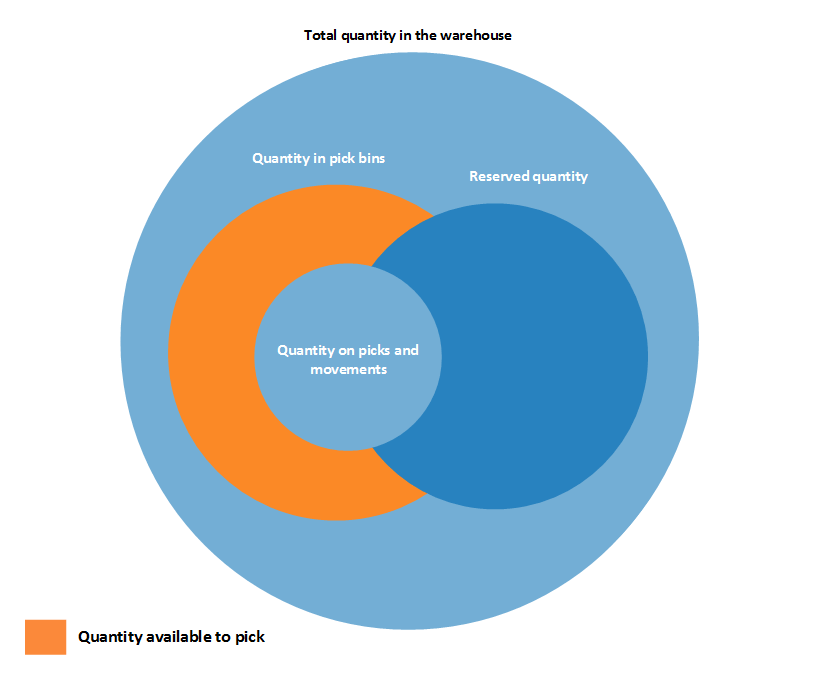
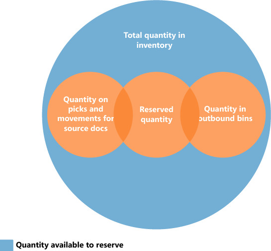

Designdetails: Verfügbarkeit im Lager
Behalten Sie die Artikelverfügbarkeit im Auge, um sicherzustellen, dass ausgehende Bestellungen effizient ablaufen und Ihre Lieferzeiten optimal sind.
Verfügbarkeit kann abhängig von verschiedenen Faktoren variieren. Beispiel:
- Zuordnungen auf Lagerplatzebene, wenn Lageraktivitäten wie Kommissionierungen und Umlagerungen stattfinden.
- Wenn das Bestandsreservierungssystem Beschränkungen auferlegt, die eingehalten werden müssen.
Bevor Mengen auf Kommissionierungen für ausgehende Ströme zugewiesen werden, prüft Business Central, dass alle Bedingungen erfüllt sind.
Wenn die Bedingungen nicht erfüllt sind, werden Fehlermeldungen angezeigt. Eine typische Meldung ist das generische „Nichts zu behandeln“. Meldung. Die Meldung kann für viele verschiedenen Ursachen, in den eingehenden und ausgehenden Flüssen angezeigt werden, in denen eine Belegzeile das Feld Menge. zu behandeln enthält.
Lagerplatzinhalt und Reservierungen
Artikelmengen existieren sowohl als Lagerposten als auch als Artikelposten im Bestand. Diese beiden Postenarten enthalten verschiedene Informationen darüber, wo Artikel vorhanden sind und ob sie verfügbar sind. Lagerplatzposten definieren die Verfügbarkeit eines Artikels nach Lagerplatz und Lagerplatzart, was als Lagerplatzinhalt bezeichnet wird. Artikelposten definieren die Verfügbarkeit eines Artikels durch ihre Reservierung für ausgehenden Belegen.
Business Central berechnet die zur Kommissinierung verfügbare Menge, wenn der Lagerplatzinhalt mit Reservierungen gekoppelt ist.
Verfügbare Menge für Kommissionierung
Business Central Reserviert Artikel für ausstehende Verkaufsauftragslieferungen, sodass sie nicht für andere Kundenaufträge kommissioniert werden, die früher versendet werden. Business Central subtrahiert Artikelmengen, die bereits in Bearbeitung sind, wie folgt:
- Mengen, die für andere ausgehende Belege reserviert sind.
- Mengen auf vorhandenen Kommissionierungsbelegen.
- Kommissionierte, aber noch nicht versendete oder verbrauchte Mengen.
Das Ergebnis wird im Feld Verfügbare Menge auf der Seite Kommissionierarbeitsblatt dynamisch berechnet und angezeigt. Der Wert wird auch berechnet, wenn Benutzer Kommissionierungen direkt für ausgehende Belege erstellen. Es folgen Beispiele für ausgehende Belege:
- Verkaufsaufträge
- Produktionsverbrauch
- Ausgehende Umlagerungen
Das Ergebnis steht in diesen Belegen in den Mengenfeldern, wie z. B. dem Feld Bewegungsmge.
Hinweis
Für die Priorität von Reservierungen wird die zu reserviere Menge von der Menge abgezogen, die für die Kommissionierung verfügbar ist. Wenn beispielsweise die Menge, die an den Kommissionierlagerplätzen verfügbar ist, 5 Einheiten ist, sich jedoch 100 Einheiten an Einlagerungslagerplätzen befinden, wird, wenn Sie mehr als 5 Einheiten für einen anderen Auftrag reservieren, eine Fehlermeldung angezeigt, da die zusätzliche Menge an den Kommissionierlagerplätzen verfügbar sein muss.
Berechnen der zur Kommissionierung verfügbaren Menge
Business Central berechnet die zur Kommissionierung verfügbare Menge wird wie folgt:
Verfügbare Menge für Kommissionierung = Menge in Kommissionierlagerplätzen - Menge in Kommissionierungen und Lagerplatzumlagerungen - (reservierte Menge in Kommissionierlagerplätzen + reservierte Menge in Kommissionierungen und Lagerplatzumlagerungen)
Das folgende Diagramm zeigt die verschiedenen Elemente der Berechnung.

Für Reservierung verfügbare Menge
Da die Konzepte des Lagerplatzinhaltes und der Reservierung gleichzeitig existieren, muss die Menge der Artikel, die zur Reservierung verfügbar sind, an die Zuordnung zu ausgehenden Lagerbelegen angepasst sein.
Sie können alle Bestandsartikel reservieren, mit Ausnahme von Artikeln, für die die Ausgangsverarbeitung begonnen hat. Die Menge, die reservierbar ist, ist als die Menge auf allen Belegen und an allen Lagerplatzarten definiert. Die folgende Ausgangsmengen sind Ausnahmen:
- Menge für nicht registrierte Kommissionierbelege
- Menge der in Lieferung enthaltenen Lagerplätze
- Menge in Fert.-Bereitst.-Lagerplatzcodes
- Menge in Off. Fert.-Ber.-Lagerpl.
- Menge in Mont.-Bereitst.-Lagerplätzen
- Menge in Ausgleichslagerplätzen
Das Ergebnis wird im Feld Verfügbare Gesamtmenge auf der Seite Reservierungen angezeigt.
In einer Reservierungszeile wird die Menge, die nicht reserviert werden kann, da sie im Lager zugeordnet wird, im Feld Zugewiesene Menge im Lager auf der Seite Reservierungen angezeigt.
Prüfen Sie, ob Artikel zur Kommissionierung verfügbar sind
Steigern Sie die Effizienz in Ihrem Lager mit genauen Echtzeitinformationen über Faktoren, die sich auf die verfügbaren Mengen auswirken können. Beispiel:
- Lagerbestände
- Lagerorte
- Verarbeitungsphasen
- Unter Quarantäne gestellte Elemente
- Reservierungen
Informationen zur Artikelverfügbarkeit können Sie den folgenden Quelldokumenten entnehmen:
- Verkaufsaufträge
- Fertigungsaufträge
- Montageaufträge
- Aufträge
Die Informationen berücksichtigen auch andere Faktoren, die die Verfügbarkeit beeinflussen. Zum Beispiel spezielle Lagerplätze, verschlossene Lagerplätze und Artikel, die nicht zur Kommissionierung verfügbar sind. Beispielsweise können Artikel reserviert sein oder auf Einlagerungs- oder Versandvorgänge warten. Auf der Seite Zusammenfassung der Kommissionierung können Sie die Elemente überprüfen, die Business Central nicht in die Kommissionierbelege aufgenommen und die erforderlichen Maßnahmen ergriffen.
Hinweis
Für diese Funktion müssen Sie die Funktion Gezielte Einlagerung und Kommissionierung für die Standorte aktivieren, die Sie in Ihrem Kommissionierungsprozess verwenden.
Vorschauversionen einrichten
Um Details darüber zu erhalten, was kommissioniert wird und was nicht, aktivieren Sie den Schalter Zusammenfassung anzeigen (gesteuerte Einlagerung und Kommissionierung) auf den Anforderungsseiten Logistik Herk. - Beleg erst. oder Warenausgang - Kommiss. erst..
Bestimmen Sie die Menge, die Sie auswählen können
Auf Zeilen auf der Seite Zusammenfassung der Lagerkommissionierung erstellen zeigt das Feld Bewegungsmenge (Basis) an, welche und wie viele Elemente vorhanden sind und Business Central versuchte zu entnehmen. Die Infobox Zusammenfassung bietet weitere Details.
Für einfache Untersuchungen bietet die Entnehmbare Menge genügend Informationen geben. Das Feld zeigt an, wie viele Artikel verfügbar sind. Wenn die kommissionierbare Menge geringer ist als erwartet, untersuchen Sie den Lagerplätzeinhalt.
Die Kommissionierbare Menge ist die maximale Menge, die Business Central für die Kommissionierung berücksichtigt werden kann. Diese Menge besteht aus Artikeln in kommissionierbaren Lagerplätzen. Die Menge schließt Mengen aus, die sich in gesperrten oder dedizierten Lagerplätzen befinden, oder Artikel, die in Lagerkommissionierbelegen kommissioniert werden. Wenn für den Artikel, den Sie kommissionieren möchten, eine Artikelverfolgung erforderlich ist, werden gesperrte Chargen- oder Seriennummern, die in kommissionierbaren Lagerplätzen gespeichert sind, von der kommissionierbaren Menge ausgeschlossen.
Wenn die kommissionierbare Menge von der Menge in kommissionierbaren Lagerplätzen abweicht, liegt möglicherweise ein Problem vor. Durchsuchen Sie den Lagerplatzinhalt, um blockierte Lagerplätze oder Mengen in aktiven Dokumenten zu finden.
Das Feld Menge im Lager zeigt die Gesamtmenge an, die Sie in Ihrem Lager vorfinden, wenn Sie eine physische Zählung durchführen. Von diesem Feld aus können Sie einen Drilldown zu den Lagerbucheinträgen durchführen. Wenn das Feld eine Menge anzeigt, die geringer ist als die Menge in der Menge in kommissionierbaren Lagerplätzen, liegt eine Abweichung zwischen Lager- und Bestandsmengen vor. Verwenden Sie in diesem Fall die Aktion Lageranpassung berechnen auf der Seite Artikelbuch.-Blatt und erstellen Sie dann die Lagerkommissionierung wieder.
Das folgende Bild zeigt die maximale Menge, die für die Kommissionierung berücksichtigt wird.
:::image type="content" source="../media/pickable-qty.png" alt-text="Maximale Menge, die für die Kommissionierung berücksichtigt wird.":::
Legende
| Brief | Description |
|---|---|
| P | Lagerplätze mit Inhalt vom Typ Kommissionierung |
| T | Lagerplätze mit Inhalt vom Typ „Auswahl“, die als „Dedizierte Lagerplätze“ markiert sind |
| A | Lagerplätze mit Inhalt vom Typ „Auswahl“ in den aktiven Dokumenten (wie eine andere Auswahl) |
| T | Lagerplätze mit Inhalt vom Typ „Kommissionieren“ mit Artikeln mit gesperrter Sendungsverfolgung |
| B | Lagerplätze mit Inhalt der Art Pick mit gesperrtem Ausgang |
| O | Andere Lagerplätze |
Reservierungen
Wenn für den kommissionierten Artikel Reservierungen vorhanden sind, wird die Berechnung fortgesetzt. Die Idee dahinter ist, dass der reservierte Bedarf eine höhere Priorität hat als der nicht reservierte Bedarf, was bedeutet, dass die Kommissionierung für den nicht reservierten Bedarf die spätere Kommissionierung für den reservierten Bedarf nicht verhindern sollte.
Um zu überprüfen, ob Ihre Menge einen Bedarf decken kann, vergleichen Sie den Wert Auswählbare Menge in der Zusammenfassung Infobox mit dem Wert im Feld Bewegungsmenge (Basis) auf den Zeilen.
Reservierungen finden Sie im Bereich Insgesamt reservierte Menge im Lager. Reservierte Mengen, die bereits kommissioniert wurden und zum Versand, zur Verwendung oder zum Verbrauch bereit sind, haben keinen Einfluss auf die Verfügbarkeit. Im Feld Reservierte Menge in Kommissionier-/Ausgangslagerplätzen wird diese Menge angezeigt.
Das Feld Verfügbare Menge ohne Lieferungslagerplatz zeigt die verfügbare Menge an, mit Ausnahme der Mengen, für die Folgendes gilt:
- Sie sind bereits für den Versand ausgewählt.
- Sie befinden sich in gesperrten Artikelchargen oder Seriennummern.
- Sie liegen in verstopften Behältern.
- Sie liegen in dedizierten Lagerplätzen.
Diese Mengen sind möglicherweise verfügbar, aber Sie können sie möglicherweise noch nicht auswählen. Sie könnten sich noch im Wareneingangs-, Lager- oder Qualitätssicherungsbereich befinden. Sie können sie in den Kommissionierbereich verschieben, indem Sie ein Einlagerungs- oder Umlagerungsarbeitsblatt bearbeiten.
Der Unterschied zwischen Verfügbare Menge ohne Lieferungslagerplatz und der reservierten Menge im Lager ist die Menge verfügbar, die zur Entnahme verfügbar ist, ohne dass sich dies auf den reservierten Bestand auswirkt.
Das folgende Bild veranschaulicht die Zuordnung der verfügbaren Menge zur reservierten Menge.
:::image type="content" source="../media/Warehouse_Reservation_Pick.png" alt-text="Maximale Menge, die bei der Kommissionierung berücksichtigt wird, wenn eine Reservierung vorliegt.":::
Legende
| Brief | Description |
|---|---|
| P | Zu kommissionierende Menge |
| TR | Insgesamt reservierte Menge im Lager. |
| RS | Reservierte Mengen, die bereits kommissioniert wurden und zum Versand, zur Verwendung oder zum Verbrauch bereit sind |
| A | Verfügbare Menge ohne Lieferungslagerplatz |
| B | Menge in dedizierten oder blockierten Lagerplätzen, blockierten Artikelchargen oder Seriennummern |
Auch wenn im Lager genügend verfügbare Menge vorhanden ist, um den Kommissionierungsbedarf vollständig zu decken, führt dies dazu, dass die gesamte reservierte Menge den Mengen in dedizierten oder gesperrten Lagerplätzen zugerechnet wird, was eine Kommissionierung für diesen Bedarf verhindert. Da reservierter Bedarf eine höhere Priorität hat, reduziert Business Central die zu kommissionierende Menge, um negative Auswirkungen auf den reservierten Bedarf, wie etwa die Unmöglichkeit der Kommissionierung, zu verhindern.
Sonstige Details
Wenn Artikel eine Artikelverfolgung erfordern, können Sie die Menge auch in gesperrten Chargen oder Seriennummern finden, was zu folgenden Reduzierungen führt:
- Die kommissionierbare Menge
- Verfügbare Menge, ohne den Transportplatz
- Die reservierte Menge im Lager
Wenn Sie denselben Artikel für mehrere Quelldokumente oder -zeilen kommissionieren, was auch bei der Kommissionierung von Seriennummern der Fall ist, werden auch Informationen zu Kommissionierungen für andere Zeilen angezeigt, da dadurch die kommissionierbare Menge reduziert wird.
Berechnen der zur Reservierung verfügbaren Menge
Business Central berechnet die zur Reservierung verfügbare Menge wird wie folgt:
Zur Reservierung verfügbare Menge = Gesamtmenge im Lagerbestand - Menge in Kommissionierungen und Lagerplatzumlagerungen für Herkunftsbelege - Reservierte menge - Menge in Ausgangslagerplätzen
Das folgende Diagramm zeigt die verschiedenen Elemente der Berechnung.

Weitere Informationen
Lagerverwaltung – Übersicht Artikelverfügbarkeit anzeigen Kommissionierung für Montage, Produktion oder Projekte in erweiterter Lagerkonfiguration
Kostenlose E-Learning-Module für Business Central finden Sie hier